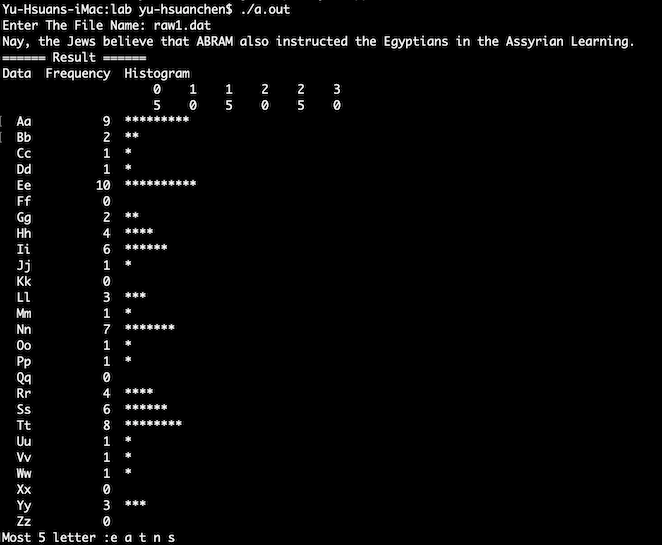

<!DOCTYPE html>
<html>
<title>Lab 10-1</title>
<meta charset="UTF-8">
<meta name="viewport" content="width=device-width, initial-scale=1">
<link href="https://fonts.googleapis.com/css?family=Noto+Sans+TC:400,700|Ubuntu+Mono&display=swap" rel="stylesheet">
<link rel="stylesheet" href="https://www.w3schools.com/w3css/4/w3.css">
<link rel="stylesheet" href="https://www.w3schools.com/lib/w3-theme-black.css">
<link rel="stylesheet" href="https://cdnjs.cloudflare.com/ajax/libs/font-awesome/4.3.0/css/font-awesome.min.css">
<style>
    p
    {
      font-size: 17px;
    }
    body
    {
      font-family: 'Noto Sans TC', sans-serif;
      font-family: 'Ubuntu Mono', monospace;
    }

  </style>
  


<body>


<!-- Header -->
<header class="w3-container w3-theme w3-padding" id="myHeader">
  <i onclick="w3_open()" class="fa fa-bars w3-xlarge w3-button w3-theme"></i> 
  <div class="w3-center">
  <h4>Lab 10-1</h4>
  <h1 class="w3-xxxlarge w3-animate-bottom">多個檔案的編譯與執行</h1>
  </div>
</header>


<!-- COLORS
<div class="w3-row">
  <div class="w3-col w3-container m2 w3-red"><p>Red</p></div>
  <div class="w3-col w3-container m2 w3-blue"><p>Blue</p></div>
  <div class="w3-col w3-container m2 w3-blue-grey"><p>Blue Grey</p></div>
  <div class="w3-col w3-container m2 w3-teal"><p>Teal</p></div>
  <div class="w3-col w3-container m2 w3-yellow"><p>Yellow</p></div>
  <div class="w3-col w3-container m2 w3-orange"><p>Orange</p></div>
</div>
-->

<div class="w3-row w3-border">
    <h3 id="toc_1">實習目標</h3>
    <ul>
    <li>練習多個檔案的編譯與整合</li>
    <li>qsort的使用</li>
    </ul>
    <h2 id="toc_2">步驟一</h2>
    
    <p>請下載 ArticileAnalyzer.exe 程式<br>
    這個程式會<br>
    1. 讀取一個檔案：<a href="resources/raw1.dat">raw1.dat</a><br>
    2. 計算檔案內每個字母的出現次數<br>
    3. 列印前五個出現次數最多的字母  </p><br>
    <br>
    <p>請下載 <a href="resources/ArticileAnalyzer.cpp">ArticileAnalyzer.cpp</a> 這個程式檔案，這個程式可以編譯，但是有部份的功能沒有完成，請依照下面的步驟逐個完成。  </p>
    
    <h2 id="toc_3">步驟二</h2>
    
    <p>程式的第49列，  </p>
    
    <div><pre><code class="language-none">//calculate the occuring frequency of data  </code></pre></div>
    
    <p>尚未完成，所以執行的時候freq[]陣列內的資料都是0，請完成此段程式碼，這個函式必須能夠計算輸入的段落中大小寫字母出現的次數，並且保存在freq陣列中。</p>
    
    <h2 id="toc_4">步驟三</h2>
    
    <p>程式第76列，</p>
    
    <div><pre><code class="language-none">//找出五個最常見的字母 </code></pre></div>
    
    <p>未完成，這個函式會需要使用到我們定義的結構ALP，ALP包含兩個元素：字母與出現次數，請先將freq函式的內容拷貝到al裡面。<br>
    接著為了找出五個最常見的字母，我們必須將al的資料做排序，這裡需要使用qsort函式。qsort的函式原型如下：</p>
    
    <div><pre><code class="language-none">void qsort (void* base, size_t num, size_t size,int (*compar)(const void*,const void*));</code></pre></div>
    
    <p>第一個參數是要排序的陣列，第二個參數則是元素的數量，第三個參數是排序的單一元素的大小，最後則是必須告訴qsort如何定義你的排序）。<br>
    舉個例子  </p>
    
    <div><pre><code class="language-none">int compare(const void *a, const void *b)
    {  
        int c = *(int *)a;
        int d = *(int *)b;
        if(c &lt; d) return -1;            //傳回 -1 代表 a &lt; b
        else if (c == d) return 0;      //傳回  0 代表 a = b
        else return 1;                  //傳回  1 代表 a&gt;b
    }
    int main()
    {
        int a[] = {3,4,5,5,3,2,1,1};
        qsort(a,8,sizeof(int),compare);
    }</code></pre></div>
    
    <p>上面的例子示範了整數陣列如何使用qsort排序，其中要注意的是額外定義的compare函式是void* 作為輸入參數，所以必須在函式中強制轉型成int才能比較。  </p>
    
    <p>請先嘗試自己撰寫，如果真的不確定再反白下面的程式碼：</p>
    
    <p><font color=#f4f6f7></p>
    
    <div><pre><code class="language-none">typedef int (*compfn)(const void*, const void*);
    int compare(ALP* a, ALP* b)
    {
        if(a-&gt;times &gt; b-&gt;times)
            return 1;
        else if(a-&gt;times &lt; b-&gt;times)
            return -1;
        else return 0;
    }
    qsort((void *)&amp;al,26,sizeof(ALP),(compfn)compare);  //maxFive函式中的呼叫方式</code></pre></div>
    
    <p></font></p>
    
    <p>做完這一步應該就可以跟範例程式有一樣的結果了。  </p>
    
    <h2 id="toc_5">步驟四</h2>
    
    <p>接著我們要將這個程式分成多個檔案：  </p>
    
    <ul>
    <li>main.cpp : 包含main()函式</li>
    <li>io.cpp : 包含 readFile()跟printArray()函式<br></li>
    <li>analysis.cpp : 包含conutAlp()跟maxfive()函式</li>
    <li>sort.cpp : 包含為qsort定義的compare()函式</li>
    </ul>
    
    <p>請注意io.cpp, analysis.cpp, sort.cpp都需要額外建立對應的標頭檔：io.h, analysis.h, sort.h  </p>
    
    <p>底下是大致上的步驟：  </p>
    
    <ol>
    <li>建立一個空專案：&quot;檔案&gt;新增&gt;專案&gt;C++空專案&quot;，輸入專案名稱lab10-1，選擇保存的位置，取消勾選「為方案建立目錄」。</li>
    <li>在專案中新增main.cpp，將ArticileAnalyzer.cpp中的main()整個拷貝到這裡。</li>
    <li>建置&gt;建置方案，下方輸出的視窗應該會看到建置失敗的訊息，請依照編譯器指出的錯誤一個個改正程式。</li>
    <li>由ArticileAnalyzer.cpp 拷貝 #define DATASIZE 1000的敘述到main.cpp</li>
    <li><p>由ArticileAnalyzer.cpp 拷貝 main()函式中使用到的函式宣告(prototype)到main.cpp檔案中的main()函式之前，包含  </p>
    
    <p>void readFile(char*);<br>
    void countAlp(const char[] ,int[]);<br>
    void printArray(const int[]);<br>
    void maxFive(const int[])</p>
    
    <p>這時候再次建置&gt;建置方案，可以看到仍然是建置失敗，但是錯誤訊息改變了，變成 <strong>連結(linking)</strong> 的錯誤了（錯誤訊息LNK???? 而不是C????），這樣表示main()函式的語法已經正確了，編譯main.cpp會通過了，但是要產生完整的執行檔案(.exe)時，發現專案裡面找不到readFile(), countAlp(), printArray()跟maxFive()函式，所以發生連結錯誤。</p></li>
    <li><p>如果你選擇main.cpp然後&quot;建置&gt;編譯(Ctrl+F7)&quot;，可以在輸出視窗看到main.cpp可以成功編譯，表示main.cpp的語法沒有問題。  </p></li>
    <li><p>繼續加入io.cpp，將由ArticileAnalyzer.cpp中的readFile()跟printArray()函式拷貝過來</p></li>
    <li><p>單獨編譯io.cpp，確認語法正確，另外因為用到fgets,fputs等函式，所以需要在io.cpp前面include stdio.h</p></li>
    <li><p>再次加入新項目，這次要加入io.h（加入項目時必須選擇「標頭檔」），拷貝ArticileAnalyzer.cpp中對這兩個函式的宣告。並且在前後交上#ifndef, #define, #endif的敘述：  </p>
    
    <p>#ifndef IO_H<br>
    #define IO_H<br>
    void readFile(char*);<br>
    void printArray(const int[]);  </p>
    
    <p>其中IO_H是配合檔案名稱取的，各個檔案中應該都是不一樣的。使用#ifndef, #define, #endif的前處理器指令是為了防止重複引入.h檔案。 <font color="blue"><a href="resources/ifndef.pdf">注意事項</a></font></p></li>
    <li><p>修改main.cpp內容，拿掉 void readFile(char*); 敘述，換成 #include &quot;io.h&quot; 
    請注意 .h 檔案裡最主要會有兩種東西, 一種是如上的函式宣告, 另外一種就是資料型態的宣告, C/C++ 編譯器不允許任何一個資料型態重複定義兩次, 例如:<br>
    struct Data {<br>
        int data;<br>
    };<br>
    struct Data {<br>
        int data;<br>
    };<br>
    ...<br>
    編譯器就認為是有錯誤的，<br>
    如果在 main.cpp 中出現<br>
    #include &quot;io.h&quot;
    #include &quot;io.h&quot;
    而io.h 中有 struct Data ... 這種資料型態的定義，那當然就會出現重複定義的錯誤
    當然程式裡直接出現這樣的重複似乎有點智障, 但是有可能出現 #include &quot;io.h&quot;, io.h 裡 #include &quot;data.h&quot;, data.h 裡又 #include &quot;io.h&quot; 的情形
    所以才使用上述的 #ifndef, #define, #endif 前處理器指令來避免這種狀況</p></li>
    <li><p>使用方案總管檢視目前Lab10-1的方案中已經有哪些原始檔、哪些標頭檔，從工具列&gt;加入新項目操作生成的檔案都會被自動加入專案，反之若是透過&quot;檔案&gt;開啟&gt;檔案&quot; 或是直接拖曳到Visual Studio打開的檔案就不會被加入專案，只是可以用Visual Studio編輯而已。所有 <strong>在專案中的檔案</strong> 都可以透過&quot;建置&gt;建置方案(Ctrl+Shift+B)&quot;一次編譯完成並且連結再一起成為一個.exe執行檔。<br>
    如果你要從專案裡移除一個檔案，你應該要在 &quot;方案總管&quot; 中點選那個檔案，以滑鼠右鍵選 &quot;移除&quot;，再選 &quot;移除&quot; 來從專案裡移除一個檔案，此時重先建置就不會編譯這個檔案，但是在檔案系統中檔案還沒有刪除；如果你以滑鼠右鍵選 &quot;移除&quot;，再選 &quot;刪除&quot;，不但從專案裡移除這個檔案，也從資料匣中永遠刪除這個檔案</p></li>
    <li><p>重複上述的動作，完成 analysis.cpp, analysis.h, sort.cpp, 以及 sort.h 檔案，這些檔案一定要在專案中。如果不在的話，你也可以在方案總管中用右鍵點選 lab10-1 專案，選擇 &quot;加入&gt;現有項目&quot; 把作出來的 .cpp 和 .h 檔案加入 (請注意這些檔案應該都在同一個資料匣裡面，繳交實習或是作業時你需要把整個資料匣壓縮起來繳交)</p></li>
    <li><p>全部完成後可以 &quot;建置&gt;建置方案(Ctrl+Shift+B)&quot; 並且 &quot;偵錯&gt;啟動但不偵錯 (Ctrl+F5)&quot; 執行程式來測試 </p></li>
    </ol>
    
    <br><br><br>
    <hr>
    <p><strong>minimal declaration 原則</strong>:<br>
    請確實瞭解應該在什麼地方 #include 需要的 .h 檔案, 很多時候在簡單的範例程式裡多加幾列 #include 敘述並不會導致錯誤, 可是有的時候在大型的專案裡就是因為你多 #include 不必要的檔案而導致使用到不正確的函式, 這種 bug 常常變成偵錯時的死角, 最主要造成錯誤的原因是連結器在函式庫裡找尋你要用的函式時是依照 #include 的順序找到第一個來使用, 如果你隨便 #include 很多沒有用到的函式庫, 就有機會在裡面有一個同樣名稱、同樣參數的函式, 可是卻偏偏就不是你想要用的那個函式; 會隨便 #include 檔案通常就代表你並不清楚什麼地方該加 #include 敘述, 代表你並不清楚為什麼要加上那些 #include 敘述, 如果你還是覺得不清楚的話請趕快問我、助教或是同學。</p>
    
    <p>上面的這些程序裡, 你應該要看完網頁內容以後, 思考一下為什麼要這樣子做, 在每次修改或是增加一小段程式以後, 運用編譯器去編譯/建置/執行, 盡量維持程式是可以編譯可以執行的, 不要累積好多動作以後才編譯一次, 弄錯了沒有立即更正的話, 你就只是跟著網頁的說明做而已, 很容易就學不到什麼東西</p>
    
    <h2 id="toc_6">請問在寫 C/C++ 程式時, 把程式分為多個檔案分別撰寫/分別編譯 和 單一一個程式檔案的作法比起來有什麼好處?</h2>
    
    <ol>
    <li><p>每次修改一個函式時, 只需要編輯那個檔案就夠了, 使用編輯器編輯一個 10000 行的程式是很危險的, 如果你手殘不小心按到鍵盤, 在某一個地方多加了一個字母, 刪除掉一些敘述, 有的時候就要多花很多時間才能找到; 如果你喜歡用編輯器的搜尋和取代, 在趕作業趕到天亮的時候, 很容易一個不小心就改到不該改的東西, 所以最安全的原則是 &quot;只編輯需要改的檔案&quot; (注意看編輯器上方改過的檔案都有 * 號, &quot;建置, 建置方案&quot; 時也只會編譯修改過的檔案)</p></li>
    <li><p>編輯完以後只需要編譯這個檔案, 如果你的程式很大有一萬行, 但是你只修改一段 10 列的程式片段, 你應該可以想像編譯器可以省下好多檢查語法的時間</p></li>
    <li><p>在寫 C 程式時, 以不同的檔案來區隔功能不同的函式, 達成模組化的基本要求, 如果很多人一起合作完成專案的化, 不同的人負責的模組可以放在不同的檔案中, 每個人修改自己負責的檔案就好</p></li>
    <li><p>在寫 C++ 物件化的程式時, 你還會發現檔案就是很自然的物件邊界, 我們很多時候會需要組合物件成為應用程式, 要拿出一個物件的時候, 你當然希望這個物件放在獨立的檔案裡, 而不希望 100 個物件放在一個檔案中, 使得你必須去編輯修改檔案....檔案經過編輯就有機會出現錯誤啊! 另外我們在測試功能的時候, 也有可能以取代物件的方式來測試, 同樣的也是希望一個檔案裡只有一個物件</p></li>
    </ol>
    
    <h2 id="toc_7">步驟五</h2>
    
    <p>請助教檢查之後，將完成的專案壓縮（請參考繳交規範），上傳至Tronclass中的Lab10-1繳交區，之後的實習還會用到這個程式。</p>
    
    <p>Reference: <a href="http://squall.cs.ntou.edu.tw/cpp/102spring/lab01/Lab1-1.html">丁培毅-C++物件導向程式設計實習</a></p>
    

<br>

<!-- Footer -->
<footer class="w3-container w3-theme-dark w3-padding-16">
  <p>2019 Spring, Introduction to Programming</p>
  <p>Website made by <a href="https://www.facebook.com/nick.chen.14811" target="_blank">Yu-Hsuan Chen</a></p>
  <p>Powered by <a href="https://www.w3schools.com/w3css/default.asp" target="_blank">w3.css</a></p>
  <div style="position:relative;bottom:55px;" class="w3-tooltip w3-right">
    <span class="w3-text w3-theme-light w3-padding">Go To Top</span>    
    <a class="w3-text-white" href="#myHeader"><span class="w3-xlarge">
    <i class="fa fa-chevron-circle-up"></i></span></a>
  </div>
</footer>

<!-- Script for Sidebar, Tabs, Accordions, Progress bars and slideshows -->
<script>
function w3_open() {
  window.location = 'home.html';
}

// Tabs
function openCity(evt, cityName) {
  var i;
  var x = document.getElementsByClassName("city");
  for (i = 0; i < x.length; i++) {
    x[i].style.display = "none";
  }
  var activebtn = document.getElementsByClassName("testbtn");
  for (i = 0; i < x.length; i++) {
    activebtn[i].className = activebtn[i].className.replace(" w3-dark-grey", "");
  }
  document.getElementById(cityName).style.display = "block";
  evt.currentTarget.className += " w3-dark-grey";
}

var mybtn = document.getElementsByClassName("testbtn")[0];
mybtn.click();


function showDivs(n) {
  var x = document.getElementsByClassName("mySlides");
  if (n > x.length) {slideIndex = 1}    
  if (n < 1) {slideIndex = x.length} ;
  for (i = 0; i < x.length; i++) {
    x[i].style.display = "none";  
  }
  x[slideIndex-1].style.display = "block";  
}

showDivs(1);

</script>

</body>
</html>
